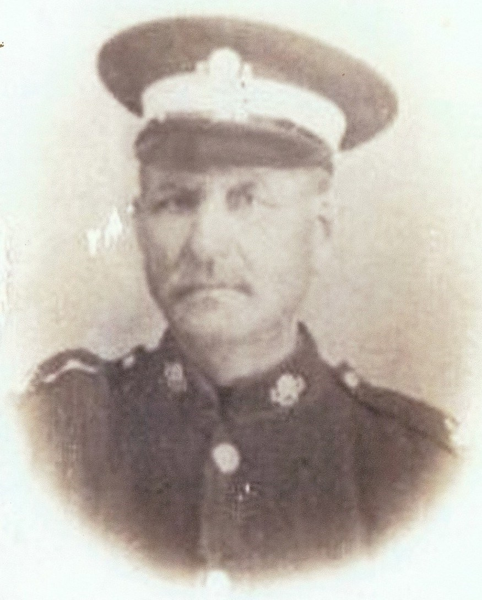

Charles Randle Port cFeb 1854 - c1916
[ Home ] | [ Calendar ] | [ Surnames Index ] | [ Errors ] | [ Family History ]A grocer and confectioner and the child of James Port (a barber) and Jane Studwick (a laundress), Charles Port, the second cousin three-times-removed on the mother's side of Nigel Horne, was born in Herne, Kent, England c. Feb 18541,2, was baptised there at St Martin on 12 Nov 1854 and married Martha Jordan (a shop keeper with whom he had 8 children: Edith M, Martha E, Harry, Nellie, James Albert, Charles M, George Arthur and William C, along with 1 surviving child) at St Alphege, Canterbury, Kent, England on 17 Jan 18754.
During his life, he was living at Sturry Street, Sturry, Kent on 7 Apr 18611; at Park Terrace, Cheriton, Kent on 5 Apr 18919; at Enbrook Buildings, Cheriton, Kent on 31 Mar 19018; and at High Street, Cheriton, Kent on 2 Apr 19117 and in 19146.
He died c. May 1916 in Elham, Kent, England3 and was buried at St Martin's Church, Cheriton, Kent on 2 May 19165.
Parents
- James was born c. 1809
- Jane Studwick was born in 1811
Children
- Edith M was born in 1876
- Martha E was born in 1878
- Harry was born on 30 May 1880
- James Albert was born c. Aug 1885
- Charles M was born in 1890
- George Arthur was born on 30 Apr 1894
- William C was born in 1900
Citations
- 1861 England, Wales & Scotland Census - Findmypast (was age 7 and the son of the head of the household)
- England & Wales births 1837-2006 - Findmypast
- England & Wales deaths 1837-2007 - Findmypast
- England & Wales Marriages 1837-2005 - Findmypast
- Kent Burials - Findmypast
- From notice of death of son, Harry
- 1911 Census for England & Wales - Findmypast (was age 58 and the head of the household)
- 1901 England, Wales & Scotland Census - Findmypast (was age 49 and the head of the household)
- 1891 England, Wales & Scotland Census - Findmypast (was age 38 and the head of the household)
Media
Charles R Port

England Births & Baptisms 1538-1975 - R_884305223
Kent Baptisms - GBPRS/CANT/B/96127700
England & Wales births 1837-2006 - BMD/B/1854/1/HR/001435/016
Kent Burials - GBPRS/D/83440736
England & Wales deaths 1837-2007 - BMD/D/1916/2/AZ/000778/035
1911 Census for England & Wales - GBC/1911/RG14/04646/0059/1
England & Wales marriages 1837-2005 - BMD/M/1875/1/AZ/000195/288
Kent marriages and banns - GBPRS/CANT/M/94103778/1
1901 England, Wales & Scotland Census - GBC/1901/0004511281
Family Tree

Map
Generated by ged2site. Last updated on Jul 3, 2024
Known Issues
Listed in the residence for 1914, but spouse Martha Jordan is not